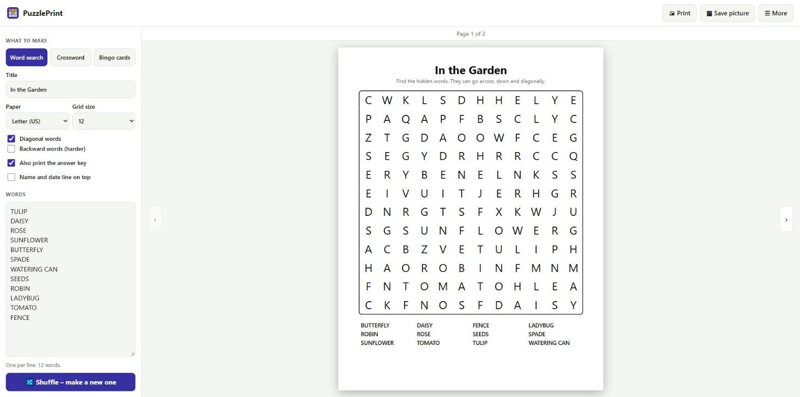
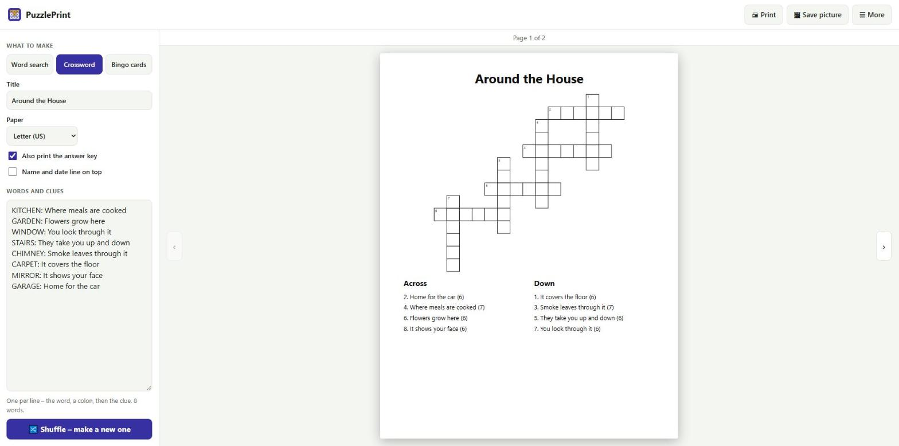
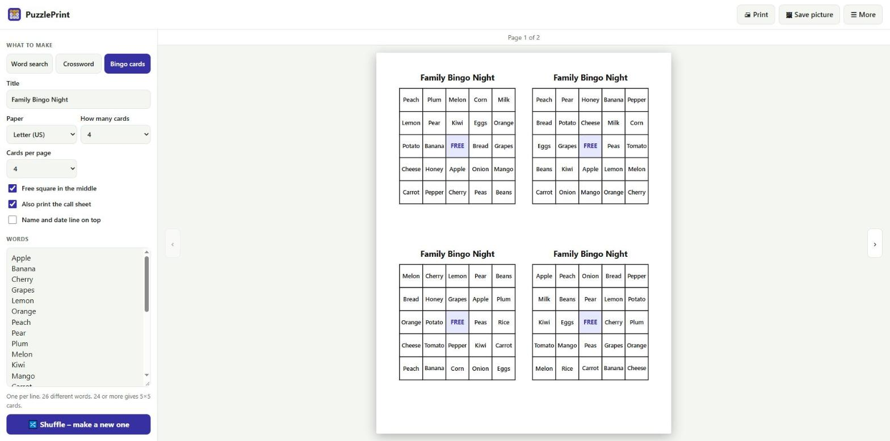

On the left you choose what to make and type your words. On the right you see the finished page exactly as it will print. Every change shows at once. Your work is saved automatically.
Each kind of puzzle keeps its own title and word list, so you can switch between them without losing anything. ☰ More → Load a sample word list fills in an example.
2. Make a word search

A word search. Your words are typed on the left; the finished page is on the right. The arrow beside the page goes to the answer key.
Click Word search at the top left.
Type a Title, for example In the Garden.
Type your words in the large box, one word or phrase per line. Spaces inside a phrase are left out in the grid.
Choose the Grid size. 10 or 12 suits children and short lists; use 15 or more for long words or many words.
Tick Diagonal words and Backward words to make it harder, or untick them for young children.
Click 🖨 Print.
If a message says Could not fit some words, choose a bigger grid.
3. Make a crossword

A crossword. Each line on the left is a word, a colon and its clue.
Click Crossword.
Type one line for each word: the word, a colon, then the clue. For example: KITCHEN: Where meals are cooked
PuzzlePrint fits the words together, numbers the squares and prints the clues under Across and Down, with the number of letters in brackets.
Click 🔀 Shuffle if you would like a different layout.
A word can only be placed if it shares at least one letter with another word. Words that share no letter are listed in a message and left out – add or change a word to fix it. Five or more words of different lengths work best.
4. Make bingo cards

Four bingo cards on one page. Every card has the words in a different order.
Click Bingo cards.
Type your words, one per line. With 24 or more different words the cards are 5 × 5; with 16–23 words they are 4 × 4; with 9–15 words 3 × 3.
Choose How many cards and Cards per page (1, 2 or 4).
Free square in the middle adds the classic FREE square on 5 × 5 and 3 × 3 cards.
Click 🖨 Print. Every card has the words in a different order.
Leave Also print the call sheet ticked: the last page lists every word with a box to tick as you call it out. You can also cut the words apart and draw them from a bowl.
5. Answer key, name line and paper
Also print the answer key – adds a second page with the solution (word searches show the words marked; crosswords show the letters filled in).
Name and date line on top – adds a line for the pupil’s name and the date, for classroom worksheets.
Paper – Letter (US) or A4.
6. Get a new puzzle from the same words
Click 🔀 Shuffle – make a new one. The words stay the same but are hidden in new places, so you can print different versions for different children or tables.
7. Look at the pages, print and save
Use the ‹ and › arrows beside the preview to look at each page.
🖨 Print prints all pages. In the Windows print window choose the same paper size, and Scale 100% or “Fit to page”.
🖼 Save picture saves the page you are looking at as a PNG picture in your Downloads folder.
☰ More → Open a word list file (.txt) loads words from a plain text file. Clear the word list empties the title and words.
8. Other languages
Accented letters and other alphabets work. When your words contain such letters, the empty squares of a word search are filled with letters taken from your own words.
9. Free version and Pro
The free version prints word searches with up to 12 words (grids up to 15), crosswords with up to 8 words, and 4 bingo cards at a time. Pro is a one-time purchase and allows up to 40 words, grids of 18 and 20 letters, and up to 50 bingo cards. Click ★ Get Pro at the top to see the price, or Restore purchase if you bought it before.
10. If something goes wrong
A word is missing from the puzzle: read the message under the word box – the grid is too small, or (crossword) the word shares no letter with the others.
Bingo shows “Add at least 8 different words”: type more words; the same word twice counts once.
The page prints too small or is cut off: check the paper size in the print window.
Questions or problems? Write to thequan03072002@gmail.com. PuzzlePrint works offline and your files never leave your PC.